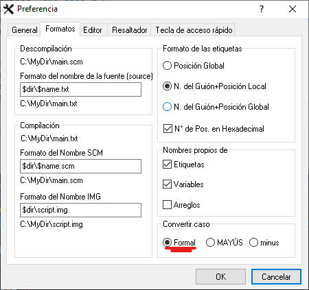

Abrir archivos
Con este opcode podremos crear, leer, escribir y borrar datos de archivos:
$hFILE = File.Open("CLEO\external_gxt", 0x72) {OP 0A9A}
Tambien es posible usarlo como condición:
Sí el archivo no existe o es incapaz de abrirse, devuelve False, de lo contrario True.
Parametros
- 1 - Variable local o global para poder manipular el archivo.
- 2 - Cadena literaria especificando la ruta hacia el archivo.
Acepta todo tipos de archivos con y sin extención. Tambien se puede configurar con el directorio principal con el OP
0A99- 3 - Tipo del modo en el que se desea habrir el archivo:
0x6272 = Leer en modo binario
0x72 = Leer en texto plano
0x6277 = Escribir en modo binario
0x77 = Escribir en texto plano
- CLEO 4 simplifica la tarea de establecer el modo utilizando un método estándar entre C++, Phyton y otros lenguajes. Puede reemplazar el parámetro INT de
mode por un STRING para especificar el modo de apertura. Si no utiliza una cadena, se utilizará el modo de apertura CLEO 3.
"rt" = Abrir un archivo para lectura (el archivo debe existir)
"rt+" = Abrir un archivo para lectura y escritura (el archivo debe existir)
"wt" = Crear un archivo vacío (si existe uno, se remplaza con este)
"wt+" = Crear un archivo vacío para escritura (si existe uno, se remplaza con este)
"at" = Abrir sino crear un archivo para escritura al final del contenido
"at+" = Abrir sino crear archivo para lectura y escritura al final del contenido
- Sí cambias la
t por una b, el archivo se abrira en modo binario.
IMPORTANTE:
Para usar esta ultima caracteriztica, es nesesario tener la opcion de
Convertir caso en
Formal.
